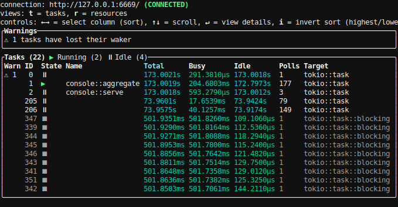
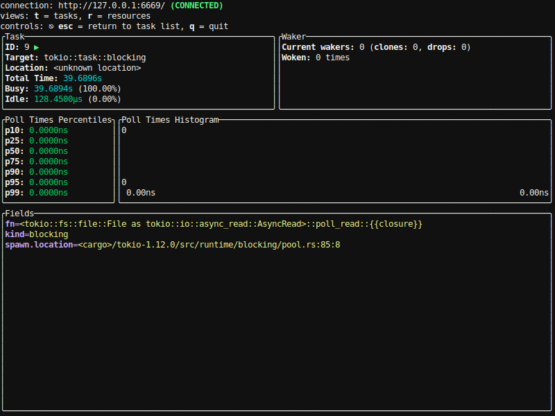

Terminating the terminal case of Linux
I remember it like it was yesterday.1 It was a very calm and pleasant evening, when, all of a sudden, amos the fasterthanlime published an article entitled "A terminal case of Linux". With a title that makes you sigh when you get it, he explains his adventure of capturing colored terminal output of a Linux process.
After a journey through the bowels of libc, the Land of Terrible Truths, and as is in Amos's style, many underlying details of the problem, we arrive at a program that does what we've set out to do. Well, almost.
You see, in a devious act of nerdsnipe, the article stops when there's still one problem to solve:

🤔 I sure do envy Amos's relationship with Cool Bear. I'd look into getting such a sidekick myself, but the dorm I'm about to move into doesn't allow keeping pets, and definitely not ones sentient enough to throw a party.
Well, I've been guilty of setting such exercises for my readers too, so today, we'll be solving one of those instead.
[.../compilercrim.es/content/amos-nerdsniped-me]$ cargo new terminus
Created binary (application) `terminus` package
First order of business: reproducing the bug. We add the dependencies...
$ cargo add libc
$ cargo add tokio@1.12.0 --features full
...paste in the code...
use std::{error::Error, os::unix::prelude::FromRawFd};
use tokio::{fs::File, io::AsyncReadExt, process::Command};
fn openpty() -> (i32, i32) {
let mut primary_fd: i32 = -1;
let mut secondary_fd: i32 = -1;
unsafe {
let ret = libc::openpty(
&mut primary_fd,
&mut secondary_fd,
std::ptr::null_mut(),
std::ptr::null(),
std::ptr::null(),
);
if ret != 0 {
panic!("Failed to openpty!");
}
};
(primary_fd, secondary_fd)
}
#[tokio::main]
async fn main() -> Result<(), Box<dyn Error>> {
let (primary_fd, secondary_fd) = openpty();
dbg!(primary_fd, secondary_fd);
let mut cmd = Command::new("/bin/bash");
cmd.arg("-c")
.arg("for i in $(seq 1 3); do cargo check; sleep 0.2; done");
unsafe {
cmd.pre_exec(move || {
if libc::login_tty(secondary_fd) != 0 {
panic!("couldn't set the controlling terminal or something");
}
Ok(())
})
};
let mut child = cmd.spawn()?;
let mut out = vec![];
let mut buf = vec![0u8; 1024];
let mut primary = unsafe { File::from_raw_fd(primary_fd) };
'weee: loop {
tokio::select! {
n = primary.read(&mut buf) => {
let n = n?;
println!("Read {} bytes", n);
out.extend_from_slice(&buf[..n]);
},
status = child.wait() => {
status?;
println!("Child exited!");
break 'weee
},
}
}
println!("{}", String::from_utf8(out)?);
println!("Ok we're gonna return now");
Ok(())
}
and...
$ cargo run -q
[src/main.rs:25] primary_fd = 9
[src/main.rs:25] secondary_fd = 10
Error: Os { code: 2, kind: NotFound, message: "No such file or directory" }
Uhh, what? That's not what was supposed to happen. The one time you chose to skip the error handling, Amos!
Hmm, we could add some error tracing ourselves, or...
squints
Ah, I see. This is because I am a masochist...
...and this is the point where Bear would chime in, with some snarky remark like "as if we didn't know that already". See? I'd be good at this. Where do I apply for a bear-ing license?
ahem, because I am a masochist and run NixOS as my daily
driver distro. This means that /bin looks like it's been deserted:
$ ls /bin
sh
No such luck in /usr/bin either:
$ ls /usr/bin
env
What are you looking at? It's POSIX compliant. If you want to find bash,
you'll need to scan through $PATH or something.
$ which bash
/run/current-system/sw/bin/bash
$ realpath $(which bash)
/nix/store/39k586qrghljxiyqvv72ni5fk89vshib-bash-interactive-4.4-p23/bin/bash
This means that shebang lines are often something like #!/usr/bin/env bash, if
you need the bash features. But apart from that (and the fact that I connect to new Wi-Fi networks
by editing a config file and then running nixos-rebuild switch, which takes a
few minutes (and the fact that getting random executables downloaded from the
internet is hard)), it's great — it's like Haskell, Bash and Unix had a
threesome and the birth control didn't quite work.
In this case, we should be able to get away with...
let mut cmd = Command::new("/bin/sh"); // was /bin/bash
cmd.arg("-c")
.arg("for i in $(seq 1 3); do cargo check; sleep 0.2; done");
...and we can observe the bug!
[...]
Finished dev [unoptimized + debuginfo] target(s) in 20.17s
Finished dev [unoptimized + debuginfo] target(s) in 0.07s
Finished dev [unoptimized + debuginfo] target(s) in 0.07s
Ok we're gonna return now
^C
So, how is it even possible that we're returning from main and the process isn't exiting?
You might think of the code provided by std that takes us from _start to main and vice versa, but today we won't need to go that deep.
The secret is that, the main we can see in our code is not the true main. See this little attribute macro?
#[tokio::main]
async fn main() -> Result<(), Box<dyn Error>> {
Macros like that are allowed to do whatever changes they want to the tokens of the item they're applied to. Let's see what the docs have to say about this particular one, then:
Marks async function to be executed by the selected runtime. This macro helps set up a
Runtimewithout requiring the user to useRuntimeorBuilderdirectly.[...]
Note: This macro can be used on any function and not just the main function. Using it on a non-main function makes the function behave as if it was synchronous by starting a new runtime each time it is called. If the function is called often, it is preferable to create the runtime using the runtime builder so the runtime can be reused across calls.
If we wanted to, we could even take a look at the code it generates with cargo expand:
$ cargo expand main
fn main() -> Result<(), Box<dyn Error>> {
tokio::runtime::Builder::new_multi_thread()
.enable_all()
.build()
.expect("Failed building the Runtime")
.block_on(async {
{
::std::io::_print(::core::fmt::Arguments::new_v1(
&["Async main says hi!\n"],
&match () {
() => [],
},
));
};
})
}
BTW, if I run cargo expand on the original code, it all gets printed on one
line, even though cargo expand already runs rustfmt here...
The actual code is just as advertised, though — it creates a Runtime, and our
actual code is put in an async block, which is then ran on that Runtime
with block_on. So I guess it gets stuck somewhere in tokio?
Now, through the magic of having wasted way too much time on Twitter, I
know of a neat tool for learning about what's happening within tokio —
the Tokio Console. It's like top, but for async tasks! Let's try it out.
The README opens with
⚠️ extremely serious warning: this is pre-alpha software undergoing active development! currently, the wire format has no stability guarantees — the crates in this repository are not guaranteed to be interoperable except within the same Git revision. when these crates are published to crates.io, the wire format will follow semver, but currently, anything could happen!
I suppose that means you can't deploy this to production, at least without pinning the git commit you use, but for having some fun, it should be fine.
On the side of our program, we need to add the console-subscriber dependency:
# in Cargo.toml
console-subscriber = { git = "https://github.com/tokio-rs/console" }
and call init when we're starting up:
#[tokio::main]
async fn main() -> Result<(), Box<dyn Error>> {
console_subscriber::init(); // new!
We also have to compile with RUSTFLAGS="--cfg tokio_unstable" cargo build, to
expose the tokio internals from which the data can be collected.
$ RUSTFLAGS="--cfg tokio_unstable" cargo run
drumroll please
error: failed to run custom build command for `prost-build v0.8.0`
Caused by:
process didn't exit successfully: `/home/maya/dev/terminus/target/debug/build/prost-build-793fc1bd9d193261/build-script-build` (exit status: 101)
--- stderr
thread 'main' panicked at 'Failed to find the protoc binary. The PROTOC environment variable is not set, there is no bundled protoc for this platform, and protoc is not in the PATH', /home/maya/.cargo/registry/src/github.com-1ecc6299db9ec823/prost-build-0.8.0/build.rs:105:10
note: run with `RUST_BACKTRACE=1` environment variable to display a backtrace
Okay, where can I find a protoc?
$ protoc
The program 'protoc' is not in your PATH. It is provided by several packages.
You can make it available in an ephemeral shell by typing one of the following:
nix-shell -p grpc-tools
nix-shell -p protobuf
nix-shell -p protobuf2_5
nix-shell -p protobuf3_1
[about ten other versions elided]
Nice, it's packaged. One nix-shell later, we have a shell with protoc
installed. All the tidyness of using some kind of ephemeral container with the
convenience of installing it globally and hoping it won't break anything.
Definitely worth all the other hassle, don't try to tell me otherwise.
$ nix-shell -p protobuf
[nix-shell:~/dev/terminus]$ RUSTFLAGS="--cfg tokio_unstable" cargo run
This should mean that our program now listens on port 6669, and will send off precious debug info when we connect. That port, on your local machine, is the default address for where the Tokio console will connect to:
$ git clone https://github.com/tokio-rs/console tokio-console
[...]
$ cd tokio-console
$ nix-shell -p protobuf # we need to do this again since we're in a separate terminal
[nix-shell:~/dev/tokio-console]$ cargo run
And just like that, we get to peek under the hood. To get a steady readout of what the normal conditions look like, let's adjust our command so that the output rate is a bit more predictable:
let mut cmd = Command::new("/bin/sh");
cmd.arg("-c")
.arg("while true; do echo Hi there; sleep 0.5; done");
// no more pesky cargo checks taking only finite time
The console looks like this now:

Apart from some tasks internal to the console itself, we see many stopped
instances of tokio::task::blocking. "stopped" meaning these are only visible
because, by default, tasks are kept on the screen for two seconds after they've
terminated.
We can see that each of those tasks ran for almost exactly half a second. Looks
like a new task is spawned each time we call read...
And if we trigger the hang bug, we indeed see one such blocking task, and it stays running. As the controls line at the top of the screen tells us, we can use the arrow keys and Enter to view some more details about it:

We can see that the task has been busy for about 40 seconds already, and that the entrypoint of this task was
<tokio::fs::file::File as tokio::io::async_read::AsyncRead>::poll_read::{{closure}}
Thanks to the [src] links in the documentation, we can easily find the
code.
And it's not pretty.
// in src/tokio/fs/file.rs
impl AsyncRead for File {
fn poll_read(
self: Pin<&mut Self>,
cx: &mut Context<'_>,
dst: &mut ReadBuf<'_>,
) -> Poll<io::Result<()>> {
let me = self.get_mut();
let inner = me.inner.get_mut();
loop {
match inner.state {
Idle(ref mut buf_cell) => {
let mut buf = buf_cell.take().unwrap();
if !buf.is_empty() {
buf.copy_to(dst);
*buf_cell = Some(buf);
return Ready(Ok(()));
}
buf.ensure_capacity_for(dst);
let std = me.std.clone();
inner.state = Busy(spawn_blocking(move || { // !
let res = buf.read_from(&mut &*std);
(Operation::Read(res), buf)
}));
}
Busy(ref mut rx) => /* ... */
}
}
}
}
As you can see, when AsyncRead::poll_read gets called, it will use
spawn_blocking to spawn a task on the thread pool, and call the normal,
not-at-all-async std::fs::File's read.
So much for Tokio being an async I/O library, I guess.
This is our smoking gun. If we try to poll a read future before our child
process exits, but after we've read all its output, Tokio's implementation of
AsyncRead will spawn a blocking task, which will call a classical, blocking
read syscall, which will wait forever for the data that'll never come.
sigh
Now that I've dug this far, I remember running into this a year ago — it's a long-standing issue that file I/O isn't actually asynchronous due to deficiencies in OS APIs, and it's known that it can block shutdown.
Back when I first hit this, I was on a tight deadline, so I just bodged around it and forgot. But surely, somebody else with more time on their hands had also hit this by now.
And, sure enough, the second result for "tokio non-blocking file io" is the
tokio-fd crate.
$ cargo add tokio-fd
Updating 'https://github.com/rust-lang/crates.io-index' index
Adding tokio-fd v0.3.0 to dependencies
quick prayer to Ferris
use std::{error::Error, convert::TryFrom};
use tokio::{io::AsyncReadExt, process::Command};
use tokio_fd::AsyncFd;
fn openpty() -> (i32, i32) {
let mut primary_fd: i32 = -1;
let mut secondary_fd: i32 = -1;
unsafe {
let ret = libc::openpty(
&mut primary_fd,
&mut secondary_fd,
std::ptr::null_mut(),
std::ptr::null(),
std::ptr::null(),
);
if ret != 0 {
panic!("Failed to openpty!");
}
};
(primary_fd, secondary_fd)
}
#[tokio::main]
async fn main() -> Result<(), Box<dyn Error>> {
console_subscriber::init();
let (primary_fd, secondary_fd) = openpty();
dbg!(primary_fd, secondary_fd);
let mut cmd = Command::new("/bin/sh");
cmd.arg("-c")
.arg("for i in $(seq 1 3); do cargo check; sleep 0.2; done");
unsafe {
cmd.pre_exec(move || {
if libc::login_tty(secondary_fd) != 0 {
panic!("couldn't set the controlling terminal or something");
}
Ok(())
})
};
let mut child = cmd.spawn()?;
let mut out = vec![];
let mut buf = vec![0u8; 1024];
let mut primary = AsyncFd::try_from(primary_fd)?; // new
'weee: loop {
tokio::select! {
n = primary.read(&mut buf) => {
let n = n?;
println!("Read {} bytes", n);
out.extend_from_slice(&buf[..n]);
},
status = child.wait() => {
status?;
println!("Child exited!");
break 'weee
},
}
}
println!("{}", String::from_utf8(out)?);
println!("Ok we're gonna return now");
Ok(())
}
sweating profusely
$ RUSTFLAGS="--cfg tokio_unstable" cargo run
Compiling terminus v0.1.0 (/home/maya/dev/terminus)
Finished dev [unoptimized + debuginfo] target(s) in 3.76s
Running `target/debug/terminus`
[src/main.rs:28] primary_fd = 9
[src/main.rs:28] secondary_fd = 10
Read 51 bytes
Read 77 bytes
Read 84 bytes
Read 84 bytes
Read 84 bytes
Child exited!
Checking tokio-fd v0.3.0
Checking terminus v0.1.0 (/home/maya/dev/terminus)
Finished dev [unoptimized + debuginfo] target(s) in 0.67s
Finished dev [unoptimized + debuginfo] target(s) in 0.09s
Finished dev [unoptimized + debuginfo] target(s) in 0.09s
Ok we're gonna return now
$
Hey, look! It works! Without any manual ^C! And it's not even ugly! And we even
got rid of that unsafe block around File::from_raw_fd.
I don't know about you, but I'm pretty satisfied with that.
Fixing this upstream in Tokio is left, as an exercise, to the reader.
Enjoyed this article?
You might like my other posts, too. If you'd like to be notified of new ones, you can follow me on Twitter or subscribe to the RSS feed.
I would like to thank my GitHub sponsors for their support: Michalina Sidor and Tijn Kersjes.
The reader is advised to compare the date on the two articles.
Twitter: @meithecatte • GitHub: @meithecatte • E-mail: catch-all on this domain